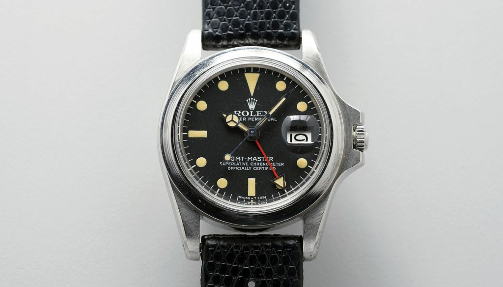

1.
Il Rolex Daytona Paul Newman è un orologio da polso di lusso con un design distintivo che include un quadrante a tre contatori, una lunetta in acciaio inossidabile con contachilometri graduato e numeri arabi grandi e colori vivaci come il rosso e il nero. Il movimento del Daytona Paul Newman è noto per la sua affidabilità e precisione. Il Rolex Daytona Paul Newman è a tutti gli effetti un Rolex “normale” che ha acquisito esclusività per via di chi lo indossava, Paul Newman, un autentica star di Hollywood. Gli fu regalato dalla moglie per un suo compleanno con la dicitura “Drive Carefully Me”, in quanto Paul Newman era un appassionato di corse automobilistiche. Qualche anno fa, per la precisione nel 2017, venne messo all’asta e venduto.
Prezzo: 17.800.000$
2.
Altro Rolex tra i più costosi di sempre, parliamo del Rolex Daytona 626 Unicorn, orologio del 1970 reso speciale dal materiale con cui fu realizzata la cassa, e cioè oro bianco, caratteristica che lo rende distinguibile da tutti i Daytona prodotti essendo l’unico esemplare.
Prezzo: 5.900.000$
3.
Il Rolex Bao Dai è un orologio particolare, sia per quanto riguarda il design che la sua storia-proprietario, infatti questo modello fu venduto all’ultimo imperatore Nguyen dynasty in Vietnam nel 1954. Nel 2017 venne venduto all’asta per circa 5,1 milioni di dollari, rendendolo ad oggi Il terzo Rolex più costoso di sempre. Ne vennero prodotti solo 3, ma solo uno era caratterizzato anche dalla presenza di diamanti come indicatori delle ore, proprio come nel caso di questo modello.
Prezzo: 5.100.000$
4.
Se hai visto uno dei più grandi film di sempre come apocalypse Now e sei un appassionato di orologi non ti sarà sfuggito sicuramente il Rolex GMT referenza 1675, indossato al polso di Marlon Brando. La figura di Marlon Brando col tempo ha aumentato il valore e il prestigio di questo modello che in un asta del 2019 è stato battuto all’asta per ben 1,952 milioni di dollari. Pur essendo un modello base si caratterizza per una caratteristica speciale, infatti questo modello è sprovvisto della lunetta nonostante il modello viene prodotta con essa. Questa fu una richiesta del regista del film Francis Ford Coppola, questo lo ha reso distinguibile dal resto dei modelli, rendendolo a tutti gli effetti un orologio Rolex unico.
Prezzo: 1.952.000$
5.
Il Rolex Oyster Albino di Eric Clapton oltre ad essere un orologio che è stato indossato da una personalità importante come Eric Clapton è anche considerato unico, in quanto è stato prodotto in soli 4 esemplari. Il nome Albino deriva dal colore della cassa e del quadrante dello stesso colore, caratteristica non presenti nei modelli standard. Questo ha portato il suo prezzo di vendita a ben 1,4 milioni di dollari a un asta di Phillips a Ginevra nel 2015.
Prezzo: 1.400.000$